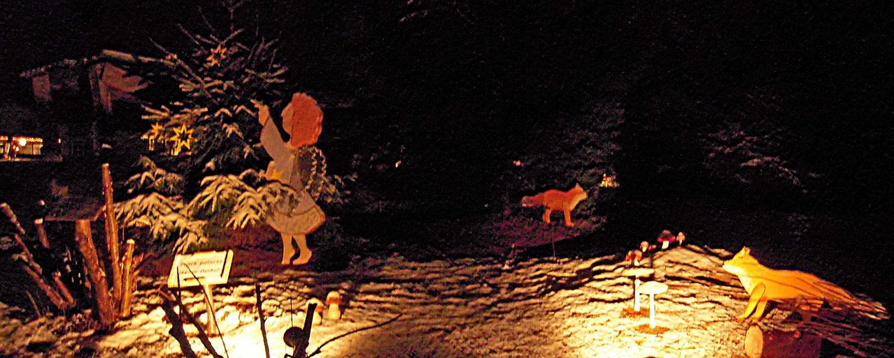

Engelweg · Was bleibt
Eine Geschichte zum Mitnehmen.
Was das Wiehnachtserläbnis vermitteln wollte – und was hier davon weiterlebt.
Leuchtende Kinderaugen. Erinnerungen bei den Grossen.
Ein Wunsch,
der über den Weg hinausging.
Das Wiehnachtserläbnis sollte die Weihnachtsgeschichte nicht nur zeigen, sondern für Kinder und Erwachsene gemeinsam erlebbar machen. Staunen, Zuhören, Singen und Basteln gehörten dazu.
Zum Engelweg gehörte auch ein Gästebuch. Die damaligen persönlichen Beiträge werden hier nicht wiedergegeben; neue Einträge sind nicht möglich.
Was auf diesen Seiten bleibt, sind die belegte Geschichte und die Bilder des Weges – und der Dank an die Menschen, die ihn besucht, unterstützt und mitgetragen haben.
Die Bilder des Wiehnachtserläbnisses